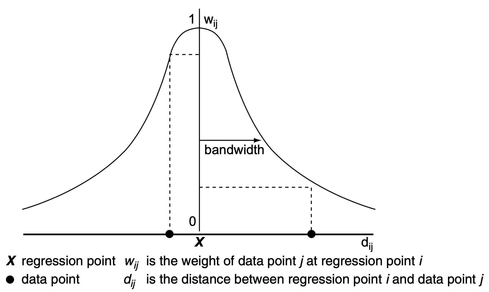
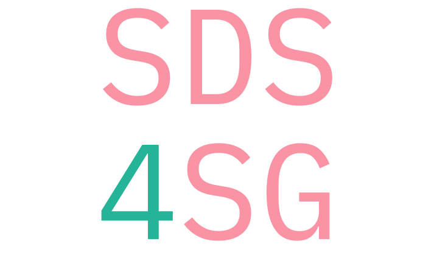

\[y_{i}=\alpha+\beta _{1}\ x_{i1}+\beta _{2}\ x_{i2}+\cdots +\beta _{p}\ x_{ip}+\varepsilon _{i}\]
configuration matters
single model across space is too restrictive

import statsmodels import mgwr
